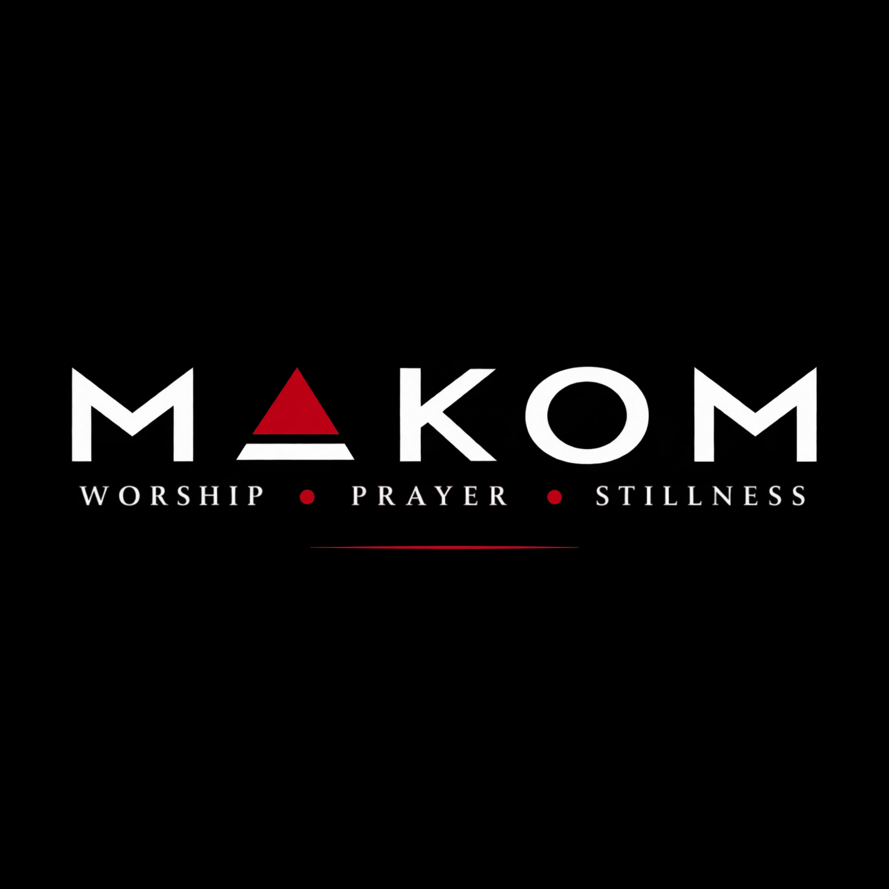
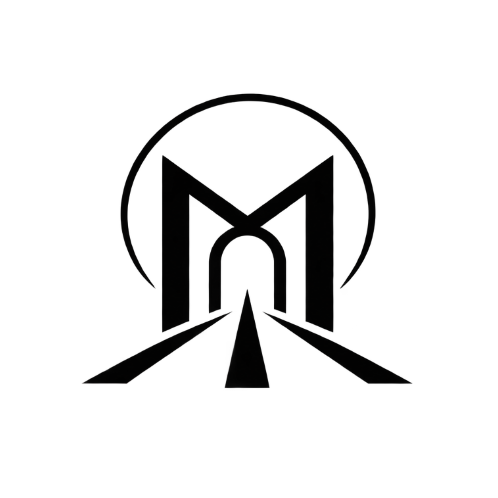

WORSHIP
Unhurried, Jesus-centred worship. Not a performance. A space to turn our attention toward Him and respond.


A PLACE TO SLOW DOWN
A place to slow down, make room, and encounter God's presence.
DISCOVER MAKOM ↓We live surrounded by noise. Schedules. Responsibilities. Notifications. Expectations.
Sometimes what we need isn't another activity.
We need room.
Room to breathe. Room to listen. Room to pray. Room to worship. Room to encounter God.
That's the heart behind MAKOM.
Unhurried, Jesus-centred worship. Not a performance. A space to turn our attention toward Him and respond.
Space to seek God personally and together, to bring what you're carrying before Him, and to receive prayer.
Moments to stop, listen, reflect and become aware of God's presence. Not every moment needs to be filled with words.
Maybe you've followed Jesus for years. Maybe you're tired. Maybe you're searching. Maybe you're not sure what you believe.
You don't need to have everything figured out.
Come with your questions. Come with your gratitude. Come with your burdens. Or simply come curious.
NEXT GATHERING

MAKOM exists to create spaces where people can encounter God through unhurried worship, prayer, Scripture, stillness and genuine community.
THIS IS NOT A CONCERT.
Be the first to know about upcoming MAKOM gatherings and updates.